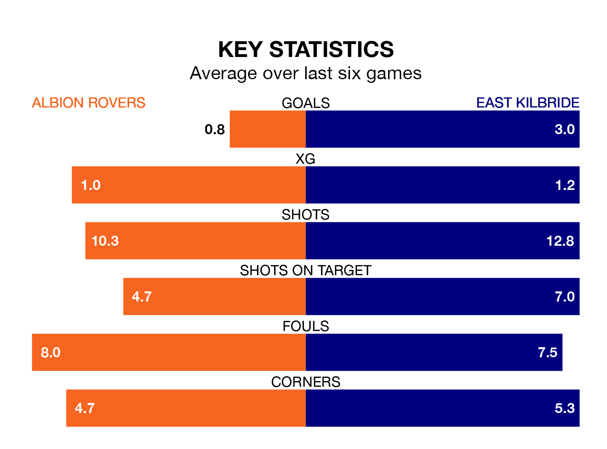

The Lowland Football League's two meanest defences go head-to-head at the Reigart Stadium on Tuesday, when Albion Rovers host East Kilbride.
No teams have conceded fewer goals than Albion to date: the home side have let in just 30 goals in 32 games.
The Kilby have conceded 37 goals in 31 games, giving them the joint-second tightest back line so far this season.
East Kilbride are top of the table after 31 games, of which they have won 24 and drawn three, earning 75 points.
Albion are seven places behind the Kilby in eighth, with 13 wins and nine draws putting them on 48 points.
Rovers are in disappointing form in the Lowland Football League, with one win and two draws from their last six games.
With four wins and two losses over that period, the away team's form is much better – they have taken 12 points from 18, compared to the Wee Rovers' five.
Albion's last match was on Saturday, a 2-1 loss against Civil Service Strollers.
East Kilbride beat Berwick Rangers 1-0 last time out, also on Saturday.
Updated: 11:31 (UTC), 15/04/24